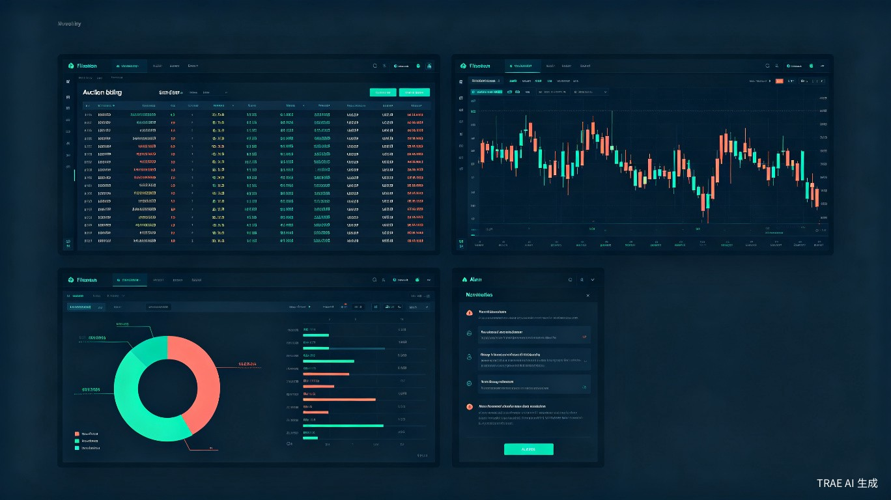

系统定位
本系统是一套面向超短线交易者的全链路实时监测与决策辅助工具，深度融合四套实战交易模式：竞价阶段选股、盘中持仓/清仓判断、箱体突破主升锁定、超短交易系统执行。系统不是自动交易程序，而是将交易者的经验规则化、数据化、实时化，在关键时间节点（竞价、开盘、盘中、尾盘）提供量化信号和决策建议，帮助交易者减少主观判断偏差，提高执行一致性。
四大交易模式映射
| 交易模式 | 核心时段 | 系统对应模块 | 核心功能 |
|---|---|---|---|
| 竞价选股模式 | 9:15-9:35 | 竞价引擎 + 开盘确认 | 板块强度排序、龙头竞价监控、涨停封单量、竞价量能分析、情绪晴雨表 |
| 持仓/清仓判断 | 盘中任意时段 | 持仓监控 + 风险预警 | 板块龙头状态追踪、分时承接力评分、量价背离检测、止损/止盈触发提醒 |
| 突破主升锁定 | 盘中 + 盘后复盘 | 突破扫描 + 主升评分 | 箱体突破检测、题材强度匹配、均线多头排列验证、MACD金叉信号、假突破过滤 |
| 超短交易系统 | 早盘30分钟 + 尾盘15分钟 | 交易信号 + 风控中枢 | 早盘强势买点触发、尾盘稳健买点触发、固定止盈/信号止盈、2%-3%强制止损、单日/周度回撤控制 |
功能需求
功能总览
| # | 模块 | 功能描述 | 优先级 | 阶段 |
|---|---|---|---|---|
| M1 | 竞价引擎 | 9:15-9:25实时采集竞价数据，计算板块强度排名、龙头竞价形态评分、涨停封单量监控、竞价量能/昨日量能占比、昨日涨停股高开率 | P0 | Phase 1 |
| M2 | 开盘确认 | 9:30-9:35监控竞价筛选出的潜力标的，验证板块持续性、分时形态（强势拉升/回调企稳/一字回封）、量比验证（≥2为有效） | P0 | Phase 1 |
| M3 | 持仓监控 | 实时追踪持仓股的板块龙头状态、分时承接力（回调是否跌破关键支撑）、量价关系（上涨放量/回调缩量为正，反之为背离） | P0 | Phase 1 |
| M4 | 清仓预警 | 自动检测持仓股的清仓信号：板块龙头炸板/跳水、分时直线跳水+放量跌破支撑、量价背离、触发止盈/止损线、心态失衡提醒（波动过大时） | P0 | Phase 1 |
| M5 | 突破扫描 | 盘后扫描全市场箱体震荡个股，检测突破信号：股价突破箱体上沿、放量（前均量1.5-2倍）、均线多头排列、MACD零轴上方金叉 | P1 | Phase 1 |
| M6 | 主升评分 | 对突破标的进行主升概率评分：题材强度（是否当前主流）、箱体震荡时长（≥2个月加分）、涨幅空间（不超1-2倍加分）、筹码集中度 | P1 | Phase 1 |
| M7 | 超短信号 | 早盘30分钟内检测突破前高+量能放大50%+板块联动（≥2只涨停）的买入信号；尾盘15分钟检测股价在均价上方+量能温和+板块红盘的稳健买点 | P1 | Phase 2 |
| M8 | 风控中枢 | 自动计算并监控：单票仓位≤10%、总仓位≤50%、止损线2%-3%、单日回撤3%停手、周度回撤5%暂停、非涨停股隔夜清仓提醒 | P0 | Phase 1 |
| M9 | 自选股池 | 支持多分组管理（竞价池、持仓池、突破池、超短池），每池独立监控规则和告警配置，支持从热门板块快捷添加 | P1 | Phase 1 |
| M10 | 复盘助手 | 自动记录每笔交易的触发信号、执行价格、盈亏比例、违规标记（超仓位/未止损/追非自选）；统计胜率、盈亏比、信号有效性 | P2 | Phase 2 |
| M11 | 告警推送 | 钉钉/企微Webhook推送，支持多级告警（紧急/重要/一般/信息），含状态切换防抖+冷却机制（60分钟），推送内容包含信号类型、触发条件、当前数值、建议操作 | P0 | Phase 1 |
| M12 | 大盘环境监测 | 实时展示上证/深证/创业板点位和涨跌幅、涨跌家数、涨跌停统计、涨停封板率、两市成交额、北向资金，作为交易背景参考 | P1 | Phase 1 |
M1 竞价引擎（9:15-9:25）
竞价阶段是超短交易的"黄金10分钟"，系统在此阶段完成从全市场5000+只股票到2-3只潜力标的的筛选。
板块强度计算
| 指标 | 计算方式 | 强/弱阈值 |
|---|---|---|
| 板块竞价涨幅 | 板块内所有个股竞价价的平均涨跌幅 | 前3名且涨幅>2%为强 |
| 板块涨停家数 | 竞价阶段涨停（含一字板）的个股数量 | ≥3家为强，0家为弱 |
| 板块联动性 | 龙头竞价涨停时，跟风股高开>3%的比例 | ≥60%为强，<40%为弱 |
| 板块高开率 | 板块内高开个股数 / 板块总个股数 | ≥70%为强 |
龙头竞价形态评分
一字涨停（10分）
竞价始终维持涨停价，无分歧。封单量≥10万手为最佳。
高开抢筹（8分）
高开≥7%，买盘量巨大，最后一秒被资金顶上高位。
温和高开（5分）
高开3%-7%，有买盘但卖盘压单也存在，分歧较大。
低开/平开（0分）
情绪不及预期，直接放弃该板块。
昨日涨停情绪晴雨表
系统统计昨日所有涨停股（非ST）今日的竞价表现：
- 高开率 = 高开家数 / 总涨停家数；≥70%为情绪火爆，<40%为情绪低迷
- 平均高开幅度 = 所有高开股的平均高开百分比；≥3%为强
- 炸板修复率 = 昨日炸板股今日高开的比例；高修复率说明容错率高
M2 开盘确认（9:30-9:35）
竞价筛选出2-3只潜力标的后，开盘5分钟的核心任务是去伪存真——验证竞价信号的真实性，排除诱多陷阱。
验证维度
| 维度 | 持仓信号 | 放弃信号 |
|---|---|---|
| 板块持续性 | 板块涨幅持续扩大，涨停家数增加，资金持续流入 | 板块涨幅回落，跟风股纷纷下跌，资金流出 |
| 量比验证 | 量比≥2，且股价同步拉升 | 量比<1，或股价拉升但量比不足（无量高开） |
| 分时形态 | 强势拉升（近90度角+量能放大）、回调企稳（缩量后回升） | 量价背离（涨时缩量/跌时放量）、持续走弱无法回升至均线 |
| 一字回封 | 开板后快速回封，回封时量能放大 | 开板后持续回落，量能放大（主力出逃） |
M3-M4 持仓监控与清仓预警
持仓阶段系统持续监控三个维度的信号，任何一维出现清仓信号即触发预警。
维度一：板块与龙头
持仓信号
板块强势轮动，核心龙头稳封涨停或震荡上行无分歧；持仓票是板块前排，同步上涨且资金承接有力。
清仓信号
板块集体走弱，龙头炸板/跳水/跌停；持仓票是后排跟风（涨时不涨、跌时领跌）；板块轮动切换、资金大面积流出。
维度二：分时与成交量
| 信号类型 | 具体表现 | 系统判定 |
|---|---|---|
| 分时直线跳水 | 跌破关键支撑（开盘价/5日线/昨收），且放量下跌 | 立即清仓 |
| 量价背离 | 上涨时缩量、下跌时放量 | 警惕清仓 |
| 震荡无方向 | 分时忽上忽下，量能忽大忽小，无明确趋势 | 建议清仓 |
| 震荡上行 | 回调不跌破支撑，上涨放量、回调缩量 | 可持仓 |
维度三：止盈止损纪律
| 纪律类型 | 触发条件 | 系统动作 |
|---|---|---|
| 固定止盈 | 盈利达到4%-6% | 推送"建议卖出50%"，剩余设移动止盈 |
| 信号止盈 | 冲高后放量回落、板块领涨股开板/下跌 | 推送"建议清仓"，无论盈利多少 |
| 强制止损 | 跌破买入价2%-3% | 紧急清仓，推送+声音提醒 |
| 移动止盈 | 盈利从高点回落到2% | 推送"清仓剩余仓位" |
M5-M6 突破扫描与主升评分
突破主升模式偏波段，系统以盘后扫描+盘中验证的方式运作。
箱体突破检测条件
量能条件
洗盘末期成交量萎缩至前期高量的30%-50%；突破时放量为前均量1.5-2倍；涨停突破为最强信号。
位置条件
整体涨幅不超1-2倍；箱体震荡时间≥1-2个月；振幅20-30%以内；周线处于上升通道。
均线条件
5/10日线从黏合/死叉转为金叉；20/60日线向上发散；股价站稳20日线上方。
MACD条件
零轴上方死叉后DIF重新拐头向上并金叉；最好伴随红柱出现；拒绝死叉信号最强。
主升概率评分模型
| 评分维度 | 满分 | 评分标准 |
|---|---|---|
| 题材强度 | 25分 | 当前主流题材+政策/业绩驱动25分；轮动杂毛题材0分 |
| 箱体质量 | 20分 | 震荡≥2个月20分；1-2个月15分；<1个月5分 |
| 量价配合 | 20分 | 洗盘缩量+突破放量适中20分；突破天量（出货嫌疑）5分 |
| 均线形态 | 15分 | 多头排列+20日线上方15分；均线黏合5分 |
| MACD信号 | 10分 | 零轴上方金叉10分；零轴下方金叉3分 |
| 筹码集中度 | 10分 | 单峰密集+套牢盘小10分；多峰分散3分 |
假突破过滤规则
- 题材非主流或已退潮
- 突破无量或放出天量（出货嫌疑）
- 股价处于历史高位
- MACD顶背离
- 突破后3天内无法继续创新高
M7 超短信号（早盘 + 尾盘）
超短交易系统的买卖信号完全量化，触发即推送，拒绝犹豫。
早盘强势买点（9:30-10:00）
触发条件（需同时满足）
② 开盘30分钟内突破前一日最高价 或 当日开盘价
③ 成交量较前日同时段放大 ≥ 50%
④ 所属板块至少2只票涨停 或 涨幅超5%
→ 系统推送"早盘买点触发"，建议仓位≤10%
尾盘稳健买点（14:45-15:00）
触发条件（需同时满足）
② 收盘前15分钟股价始终在当日均价上方运行
③ 量能温和放大，无放量下跌
④ 所属板块当日整体红盘，无大幅回落
⑤ 当日涨幅不超过7%（避免次日低开被套）
→ 系统推送"尾盘买点触发"，建议仓位≤10%
M8 风控中枢
风控是超短交易的保命环节，系统以硬规则+自动监控的方式强制执行。
| 风控规则 | 阈值 | 系统动作 |
|---|---|---|
| 单票仓位上限 | ≤ 总资金10% | 买入前校验，超限则拒绝下单提醒 |
| 总仓位上限 | ≤ 50% | 实时监控，接近50%时黄色提醒 |
| 强制止损 | 买入价 -2% ~ -3% | 紧急推送 + 声音提醒 + 建议市价清仓 |
| 单日回撤控制 | 账户单日亏损 ≥ 3% | 交易锁定，推送"今日停手"，禁止新买入 |
| 周度回撤控制 | 周度亏损 ≥ 5% | 交易暂停，推送"暂停1-2天复盘" |
| 隔夜风控 | 非涨停股 | 收盘前30分钟推送"建议清仓非涨停持仓" |
| 交易频率 | 单日≤2次，每周≤5次 | 超限推送"今日/本周已达上限" |
M10 复盘助手
系统自动记录每笔交易的关键信息，生成复盘报告。
自动记录字段
─────────────────────────────────────────────────────────────────
华电辽能 | 5.20 | 5.72 | 10% | 早盘突破+板块联动 | 是 | +10% | 无
奥瑞德 | 3.15 | 3.05 | 10% | 尾盘稳健买点 | 否 | -3.2%| 未止损（跌破3%未执行）
周度统计
- 胜率 = 盈利次数 / 总交易次数；目标≥60%
- 盈亏比 = 平均盈利 / 平均亏损；目标≥2:1
- 信号有效性 = 触发信号后真拉升次数 / 总触发次数
- 违规率 = 违规次数 / 总交易次数；目标趋近于0%
技术架构
推荐技术栈
| 层次 | 技术选型 | 选型理由 |
|---|---|---|
| 前端展示 | React + TypeScript + Vite + ECharts | ECharts对K线、分时、热力图支持完善；React组件化适合多模块Dashboard |
| 后端服务 | Python FastAPI | 异步WebSocket原生支持，Pandas/NumPy便于指标计算，开发效率高 |
| 实时通信 | WebSocket + Redis Pub/Sub | WebSocket推送行情至前端；Redis Pub/Sub解耦采集与计算模块 |
| 缓存 | Redis | 行情缓存（TTL=10s）、信号状态存储、冷却时间记录 |
| 数据库 | PostgreSQL | 交易记录、自选股池、复盘数据；Phase 1可用SQLite替代 |
| 告警推送 | 钉钉/企微机器人 Webhook | 零成本，支持Markdown，个人和团队均适用 |
| 部署 | Docker Compose | 一键部署后端+Redis+DB+前端Nginx |
数据流架构
flowchart LR
subgraph 数据源层
A[新浪/腾讯财经API]
B[同花顺QuantAPI]
end
subgraph 采集层
C[竞价采集器
9:15-9:25]
D[盘中采集器
3秒轮询]
E[盘后扫描器
收盘后]
end
subgraph 计算层
F[板块强度引擎]
G[信号匹配引擎]
H[风控计算器]
I[评分模型]
end
subgraph 存储层
J[(Redis
缓存+状态)]
K[(PostgreSQL
记录+配置)]
end
subgraph 展示层
L[React Dashboard]
M[钉钉/企微推送]
end
A --> C
A --> D
B --> D
D --> E
C --> F
D --> F
D --> G
D --> H
E --> I
F --> J
G --> J
H --> J
I --> K
J -->|WebSocket| L
J -->|Webhook| M
数据源选型
| 数据类型 | Phase 1 | Phase 2 | 费用 |
|---|---|---|---|
| 实时行情 | 新浪/腾讯HTTP API | 同花顺QuantAPI免费版 | 免费 |
| 竞价数据 | 东方财富公开数据 | 同花顺QuantAPI | 免费 |
| 板块/资金流向 | AKShare本地缓存 | 同花顺QuantAPI | 免费 |
| 历史K线/MACD | Tushare免费版 | Tushare Pro | 免费/积分 |
里程碑规划
Dashboard 布局
系统Dashboard采用四区布局，按交易时段自动切换焦点区域：
左上：竞价区（9:15-9:35活跃）
板块强度排行榜、龙头竞价评分、涨停封单量、昨日涨停情绪晴雨表、潜力标的列表
右上：持仓区（盘中持续）
持仓股列表（含盈亏%、当前信号）、分时图+量比、板块龙头状态、止盈止损线
左下：信号区（早盘+尾盘活跃）
早盘买点触发列表、尾盘买点触发列表、突破池评分排行、超短交易记录
右下：风控区（全天）
当前总仓位%、单日盈亏%、周度盈亏%、回撤进度条、交易次数计数、风控告警列表